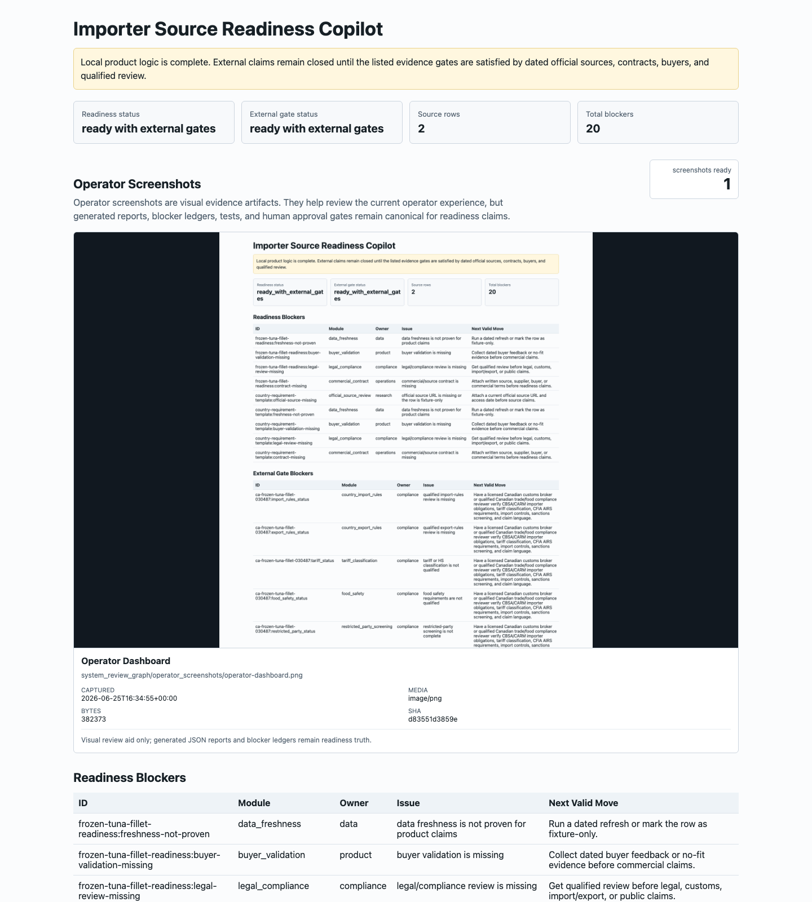

Source Freshness
Refresh official sources and keep claims reference-only until qualified review.
Local product logic is complete. External claims remain closed until the listed evidence gates are satisfied by dated official sources, contracts, buyers, and qualified review.
Customer packet prototype active - real customer use not enabled. It produces safe readiness reports and blockers, not import approval, tariff confirmation, CFIA clearance, supplier recommendations, buyer validation, legal advice, or launch approval.
| Packet | Product | Status | Evidence | Blockers | Next Valid Move |
|---|---|---|---|---|---|
| Frozen tuna Canada source packet | Frozen tuna fillet | Blocked - source freshness missing | 3 attached / 10 missing; 3 stale; 3 reference-only | 7 | Refresh official sources and keep claims reference-only until qualified review. |
Complete source refresh proof, privacy/legal terms, qualified review workflow, buyer validation, source contracts, and private-beta security controls.
Refresh official sources and keep claims reference-only until qualified review.
Run restricted-party screening and attach the dated search record.
Attach source-rights or commercial terms before external use.
Collect buyer/operator validation before demand or PMF claims.
Add auth, organizations, roles, audit logs, upload controls, backup, and incident-response procedures.
Create privacy notice, terms, data deletion policy, and qualified legal/privacy review packet.
This workflow is an operator workbench for internal review. It coordinates generated reports, Canadian reference tools, continuation lanes, and human approval gates; it does not prove external-world readiness, customs/tariff correctness, buyer demand, legal/financial approval, supplier quality, or production launch approval.
| Priority | Type | Owner | Status | Next Valid Move | Canada Tools |
|---|---|---|---|---|---|
| 90 | human approval gate | Canadian trade compliance reviewer simulation | approval required | Send the country matrix and source packet to a licensed Canadian customs broker or qualified compliance reviewer. | n/a |
| 90 | human approval gate | data | approval required | Add a no-write refresh proof and source-rights approval. | n/a |
| 90 | human approval gate | data source reviewer simulation | approval required | Implement a dated no-write refresh proof and attach source-rights approval before external source claims. | n/a |
| 90 | human approval gate | founder | approval required | Approve a 12-month operating plan and first 90-day budget before commitments. | n/a |
| 90 | human approval gate | financial advisor simulation | approval required | Founder and finance reviewer should approve a 12-month budget, pricing experiment, and cash runway before spend commitments. | n/a |
| 90 | human approval gate | legal | approval required | Have counsel/privacy reviewer approve terms, privacy posture, liability boundary, and claims. | n/a |
| 90 | human approval gate | legal and privacy reviewer simulation | approval required | Have Canadian counsel/privacy reviewer approve terms, privacy copy, liability boundaries, and investor language. | n/a |
| 90 | human approval gate | product operator | approval required | Board reviews the generated brief and either approves a private beta or sends corrections. | n/a |
| 90 | human approval gate | compliance | approval required | Route the generated packet to a licensed Canadian customs broker or qualified reviewer. | n/a |
| 90 | human approval gate | security | approval required | Approve private beta deployment controls before external users. | n/a |
| 90 | human approval gate | security and operations reviewer simulation | approval required | Approve a controlled private beta environment with access control, logging, incident response, and rollback owner. | n/a |
| 86 | external evidence gate | compliance | blocked external input | Have a licensed Canadian customs broker or qualified Canadian trade/food compliance reviewer verify CBSA/CARM importer obligations, tariff classification, CFIA AIRS requirements, import controls, sanctions screening, and claim language. | cfia-airs |
| 86 | external evidence gate | compliance | blocked external input | Have a licensed Canadian customs broker or qualified Canadian trade/food compliance reviewer verify CBSA/CARM importer obligations, tariff classification, CFIA AIRS requirements, import controls, sanctions screening, and claim language. | cbsa-customs-tariff-2026, cbsa-licensed-customs-brokers |
| 86 | external evidence gate | operator | blocked external input | Keep the product internal until buyer validation, contracts, compliance review, and operator support are proven. | canada-business-planning, bdc-financial-plan-template, pipeda-brief, cyber-centre-baseline-controls |
| 86 | external evidence gate | compliance | blocked external input | Get qualified Canadian review for country matrix, tariff treatment, CFIA food import obligations, sanctions screening, and claims language. | cbsa-licensed-customs-brokers, pipeda-brief |
| 82 | external evidence gate | compliance | blocked external input | Have a licensed Canadian customs broker or qualified Canadian trade/food compliance reviewer verify CBSA/CARM importer obligations, tariff classification, CFIA AIRS requirements, import controls, sanctions screening, and claim language. | gac-import-controls |
| 82 | external evidence gate | compliance | blocked external input | Have a licensed Canadian customs broker or qualified Canadian trade/food compliance reviewer verify CBSA/CARM importer obligations, tariff classification, CFIA AIRS requirements, import controls, sanctions screening, and claim language. | cbsa-import-commercial-goods |
| 82 | external evidence gate | compliance | blocked external input | Have a licensed Canadian customs broker or qualified Canadian trade/food compliance reviewer verify CBSA/CARM importer obligations, tariff classification, CFIA AIRS requirements, import controls, sanctions screening, and claim language. | canada-sanctions |
Operator screenshots are visual evidence artifacts. They help review the current operator experience, but generated reports, blocker ledgers, tests, and human approval gates remain canonical for readiness claims.

system_review_graph/operator_screenshots/operator-dashboard.png
Visual review aid only; generated JSON reports and blocker ledgers remain readiness truth.
| ID | Module | Owner | Issue | Next Valid Move |
|---|---|---|---|---|
| frozen-tuna-fillet-readiness:freshness-not-proven | data_freshness | data | data freshness is not proven for product claims | Run a dated refresh or mark the row as fixture-only. |
| frozen-tuna-fillet-readiness:buyer-validation-missing | buyer_validation | product | buyer validation is missing | Collect dated buyer feedback or no-fit evidence before commercial claims. |
| frozen-tuna-fillet-readiness:legal-review-missing | legal_compliance | compliance | legal/compliance review is missing | Get qualified review before legal, customs, import/export, or public claims. |
| frozen-tuna-fillet-readiness:contract-missing | commercial_contract | operations | commercial/source contract is missing | Attach written source, supplier, buyer, or commercial terms before readiness claims. |
| country-requirement-template:official-source-missing | official_source_review | research | official source URL is missing or the row is fixture-only | Attach a current official source URL and access date before source claims. |
| country-requirement-template:freshness-not-proven | data_freshness | data | data freshness is not proven for product claims | Run a dated refresh or mark the row as fixture-only. |
| country-requirement-template:buyer-validation-missing | buyer_validation | product | buyer validation is missing | Collect dated buyer feedback or no-fit evidence before commercial claims. |
| country-requirement-template:legal-review-missing | legal_compliance | compliance | legal/compliance review is missing | Get qualified review before legal, customs, import/export, or public claims. |
| country-requirement-template:contract-missing | commercial_contract | operations | commercial/source contract is missing | Attach written source, supplier, buyer, or commercial terms before readiness claims. |
| ID | Module | Owner | Issue | Next Valid Move |
|---|---|---|---|---|
| ca-frozen-tuna-fillet-030487:import_rules_status | country_import_rules | compliance | qualified import-rules review is missing | Have a licensed Canadian customs broker or qualified Canadian trade/food compliance reviewer verify CBSA/CARM importer obligations, tariff classification, CFIA AIRS requirements, import controls, sanctions screening, and claim language. |
| ca-frozen-tuna-fillet-030487:export_rules_status | country_export_rules | compliance | qualified export-rules review is missing | Have a licensed Canadian customs broker or qualified Canadian trade/food compliance reviewer verify CBSA/CARM importer obligations, tariff classification, CFIA AIRS requirements, import controls, sanctions screening, and claim language. |
| ca-frozen-tuna-fillet-030487:tariff_status | tariff_classification | compliance | tariff or HS classification is not qualified | Have a licensed Canadian customs broker or qualified Canadian trade/food compliance reviewer verify CBSA/CARM importer obligations, tariff classification, CFIA AIRS requirements, import controls, sanctions screening, and claim language. |
| ca-frozen-tuna-fillet-030487:food_safety_status | food_safety | compliance | food safety requirements are not qualified | Have a licensed Canadian customs broker or qualified Canadian trade/food compliance reviewer verify CBSA/CARM importer obligations, tariff classification, CFIA AIRS requirements, import controls, sanctions screening, and claim language. |
| ca-frozen-tuna-fillet-030487:restricted_party_status | restricted_party_screening | compliance | restricted-party screening is not complete | Have a licensed Canadian customs broker or qualified Canadian trade/food compliance reviewer verify CBSA/CARM importer obligations, tariff classification, CFIA AIRS requirements, import controls, sanctions screening, and claim language. |
| ca-frozen-tuna-fillet-030487:broker_or_expert_review_status | expert_review | compliance | broker or qualified expert review is missing | Have a licensed Canadian customs broker or qualified Canadian trade/food compliance reviewer verify CBSA/CARM importer obligations, tariff classification, CFIA AIRS requirements, import controls, sanctions screening, and claim language. |
| buyer-validation:evidence-missing | buyer_validation | product | buyer/operator validation is missing | Collect dated buyer or operator feedback, including no-fit/no-budget evidence, and attach it to the evidence packet. |
| qualified-compliance-review:evidence-missing | legal_compliance | compliance | qualified compliance review is missing | Get qualified Canadian review for country matrix, tariff treatment, CFIA food import obligations, sanctions screening, and claims language. |
| commercial-source-contract:evidence-missing | commercial_contract | operations | commercial/source contract is missing | Attach written terms for data/source rights, supplier/buyer contact use, liability boundary, and termination. |
| source-rights-and-freshness:evidence-missing | data_freshness | data | repeatable data freshness and source rights are not proven | Define source rights, refresh cadence, freshness SLA, and a no-write refresh proof before product claims. |
| launch-claims:evidence-missing | launch_readiness | operator | public or commercial launch claims are not allowed | Keep the product internal until buyer validation, contracts, compliance review, and operator support are proven. |
All unsafe gates are closed: no external sends, paid actions, customs/tariff claims, import/export advice claims, or supplier recommendations were made.
{kind=link}